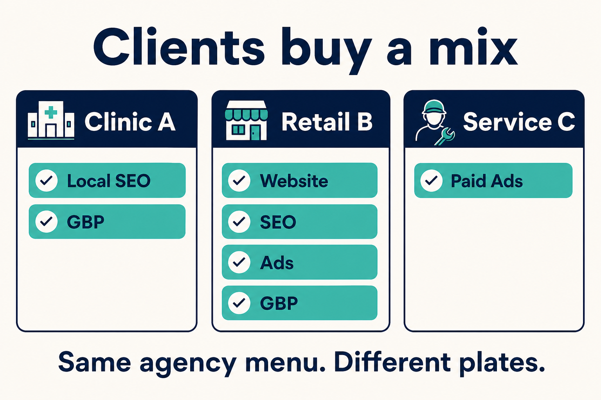
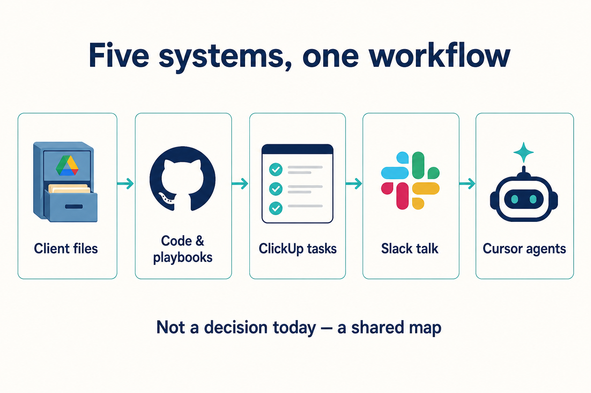
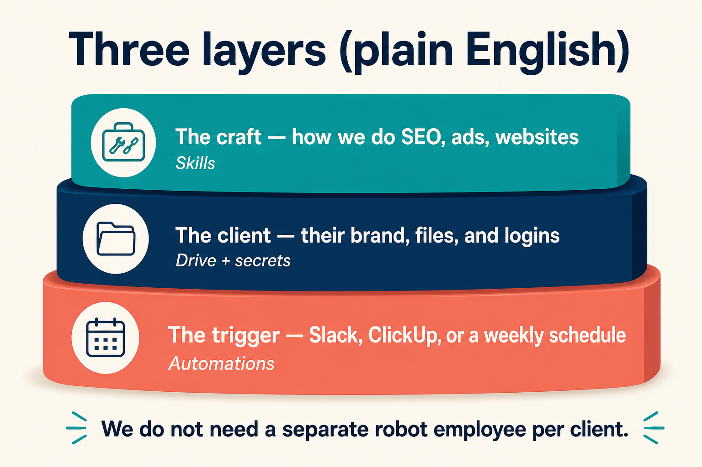
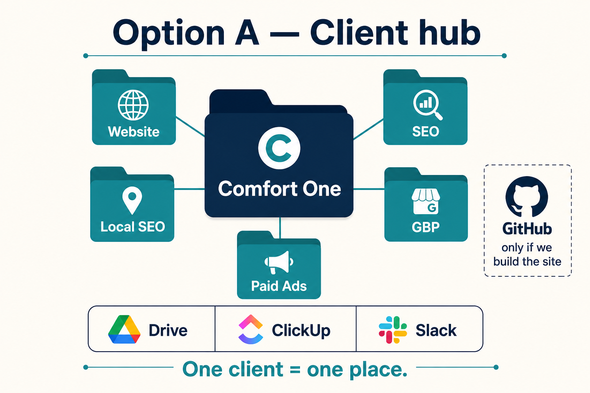
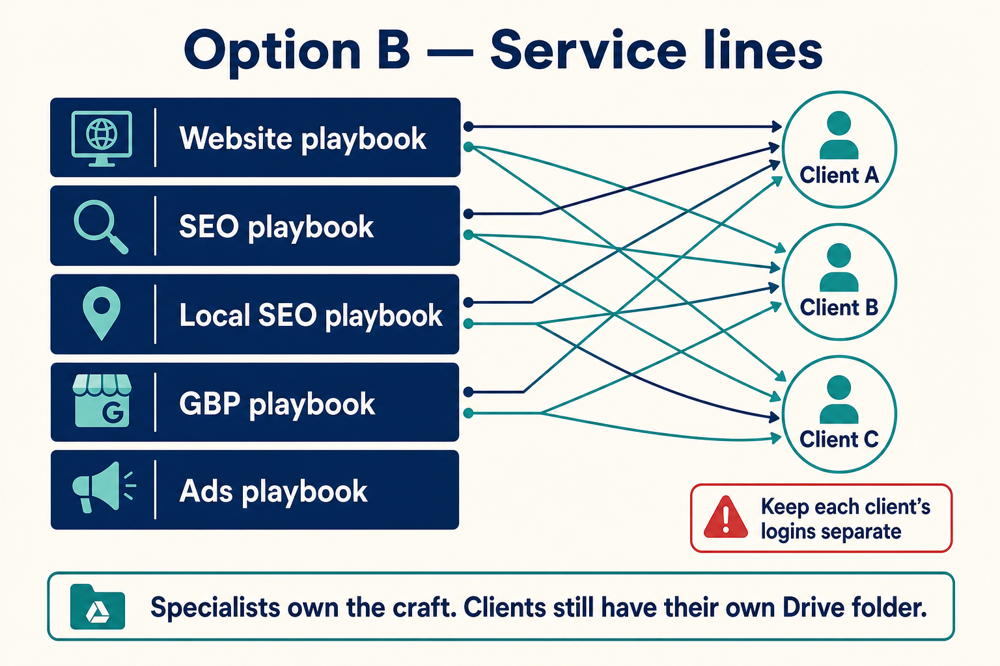
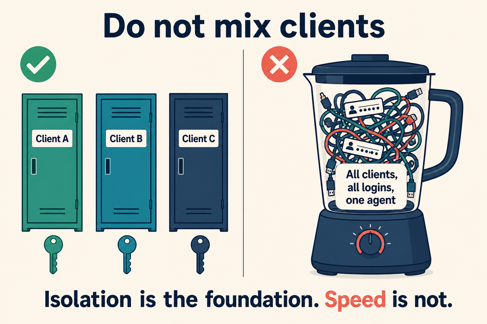

Outworkem Digital · Internal workshop
How we organize client work, files, and agents
A shared foundation for technical and non-technical teammates. Today we learn the map. We do not pick a final setup in this first pass.
Goal today
Same picture
Everyone can point to Drive, GitHub, ClickUp, Slack, and Cursor and say what each is for.
Not today
No lock-in
No “we decided Option A.” No new client machines or automations unless the room agrees it is obviously safe.
After
A second meeting
Sleep on it. Collect questions. Then choose. This is the operating system of the agency.
Facilitation
How to use this deck together
For everyone
- If a word is unclear, stop the presenter. Jargon is a bug.
- Write questions on a shared doc; do not debate every slide.
- Green-flag / red-flag reactions are welcome. Decisions wait.
Two languages on each idea
- Floor: what an account manager or specialist does on Monday.
- Basement: what GitHub, secrets, and automations are doing underneath.
Keyboard: ← → or Space. Print this file to PDF if people want to annotate.
The problem
We are building the factory, not one more campaign
If we improvise per client
- Brand files live in five places.
- Each person invents a slightly different process.
- Agents (and humans) mix client context by accident.
- Onboarding a new retainer takes tribal knowledge.
If we share one map
- You always know where Comfort One’s GBP photos live.
- SEO craft improves once, then every client benefits.
- Logins never sit in a shared “god agent.”
- Selling a new service means adding a folder + a list — not a new universe.
What we sell
Five services. Clients buy a mix.
Website
Build and change the site.
SEO
Search visibility beyond the map pack.
Local SEO
City / service-area search.
GBP
Google Business Profile.
Paid ads
Paid media briefs, QA, reporting.
Email or other channels later use the same pattern — they do not need a special snowflake system.
Retainers are not identical
Same menu, different plates

Rule to discuss: do not create empty ClickUp lists or Drive folders for work they did not buy. Add them when they buy the service.
The ecosystem
Five systems. None of them is “the agent.”

Put this on the wall
What lives where
| System | In one sentence | Examples | Who lives here daily |
|---|
| Google Drive | The client file cabinet | Brand kit, creatives, GBP photos, reports, SOW | Everyone |
| GitHub | Versioned work with history | Website code, agency playbooks / skills | Web + whoever maintains playbooks |
| ClickUp | The work queue | Tasks by purchased service | AMs + specialists |
| Slack | Conversation | #client-name, internal ops thread | Everyone, including the client |
| Cursor | Helpers that follow our map | Draft a GBP post, open a site PR, weekly SEO checklist | Kicked off by people or schedules |
Drive is not GitHub. Folders do not have branches or pull requests. Agents work better on git for code; Drive is where humans already store files.
Google Drive — both options use this
One cabinet per client
OWD /
_Agency / Playbooks, Templates
Clients /
Comfort-One /
00-Account
Website ← only if sold
SEO
Local-SEO
GBP
Paid-Ads
Reports
Discussion prompts
- Is 00-Account enough for brand voice, or do we also want a one-page “how to talk like this client”?
- Who is allowed to create a new client folder? AM? Ops?
- Passwords never live in Drive as a spreadsheet. Where do they live instead? (We’ll name the tool later.)
Cursor in plain English
We do not hire a robot per client

Craft = skill
How OWD does SEO, ads, GBP, websites. Improves once for the whole agency.
Client = folder + logins
Their brand, Drive, and secrets. Isolation lives here.
Trigger = automation
Weekly schedule, Slack emoji, or ClickUp task. Cloned per client, only for services they bought.
A Monday, not a diagram in the abstract
Example: “Need two GBP posts this week”
Discuss: should Slack ever kick the helper off without a ClickUp task? Default suggestion for debate: ClickUp is the queue; Slack is talk.
Option A
Client hub — one place per account

Option A · Floor and basement
What Option A actually is
Floor — everyone
- Open the client’s Drive folder. See only sold services.
- ClickUp Space = that client. Lists = sold services.
- Slack channel = that client.
- Website (if we own it) has a GitHub repo. If we don’t, there is no site repo.
Basement — technical
- One GitHub repo
owd-playbooks for shared skills.
- Optional
web-{client} for the site.
- Cursor automations cloned per client, enabled only for sold services.
- Secrets (ads, GBP, CMS) scoped to that client — never a shared bag.
Option A
Pros and cons to argue about
Pros
- Matches how AMs and Slack already think.
- Partial retainers are obvious.
- Harder to mix client files and logins.
- GitHub stays small: playbooks + real websites.
- Non-technical people almost never need GitHub.
Cons
- SEO / ads / GBP files live in Drive; agents are clumsier there than in git.
- Specialists hop between many client folders.
- We still copy automations per client (Cursor works that way).
- Website-less clients have no GitHub home — easy to forget how those helpers start.
Option B
Service lines — specialists own the craft

Drive still has a folder per client. GitHub is organized by discipline (SEO playbook, ads playbook, …).
Option B · Floor and basement
What Option B actually is
Floor — everyone
- Same Drive cabinet and ClickUp Space per client.
- SEO people “live” in the SEO playbook; ads people in ads.
- AMs still open the client, not the playbook, for status.
Basement — technical
- Repos:
playbooks-seo, playbooks-ads, playbooks-gbp, … plus web-{client}.
- A helper starts in the playbook repo, then reads that client’s Drive / task.
- Must load only that client’s logins. A shared ads environment with every client’s keys is a fail.
Option B
Pros and cons to argue about
Pros
- Craft compounds: one SEO SOP upgrade helps every client.
- Clear ownership for service leads.
- Helpers boot with the right checklist and tools.
- Fits a department org (SEO team vs ads team).
Cons
- Two maps: Drive by client, GitHub by service. Things will be filed wrong.
- Secret isolation is easier to get wrong than in Option A.
- Heavier than we need if one pod does all five services.
- AMs do not have “one GitHub repo” for the account (they shouldn’t need it).
Side by side
Same client cabinet. Different GitHub gravity.
| Option A — Client hub | Option B — Service lines |
|---|
| Drive | Per client | Per client (same) |
| ClickUp / Slack | Per client | Per client (same) |
| GitHub | Playbooks + sites only | One playbook repo per service + sites |
| Where specialists feel at home | Inside the client folder | Inside their playbook repo |
| Biggest risk | Agents weak on Drive-only work | Mixing client logins on a shared helper |
| Fits | Account-led, mixed retainers | Specialist teams, productized services |
Stress test
Client buys only Local SEO + GBP
Local SEOGBP
WebsiteSEOAds
- Drive: 00-Account, Local-SEO, GBP, Reports. No Website / Ads folders.
- ClickUp: two lists only.
- Slack: still one client channel.
- GitHub: no
web-* repo.
- Cursor: two cadence helpers, not five.
When they later buy ads
- Add Drive folder Paid-Ads.
- Add ClickUp list.
- Clone the ads automation.
- Add ads logins to that client only.
We do not create a new “client robot.”
Guardrails worth agreeing early
Things that look fast and age badly

Also avoid
Four traps (discuss, then park)
1. One GitHub repo for all clients
Permissions, history, and helpers share a brain. Confidentiality is theater.
2. One repo per client per service
acme-seo, acme-ads, acme-gbp… repo explosion. Drive already stores those files.
3. One Cursor agent named OWD
Every MCP, every login. Fastest demo. Worst production.
4. Treating Drive like git
No pull requests, no review trail for site code. Keep code in GitHub.
Do not answer all of these today
Decision questions for a later meeting
Who is allowed to create a new client (Drive + ClickUp + Slack)?
Where do logins live, if not Drive? Who rotates them?
May a helper ever post into the client Slack channel, or only internal?
Must every piece of work have a ClickUp task before a helper starts?
Are we account-led (A) or specialist-led (B) in 6–12 months — honestly?
What happens to the existing Comfort One email GitHub repo so it does not become a third pattern?
Close
Leave with a map, not a verdict
This week
Share this deck. Collect comments in one ClickUp task or Slack thread.
Next workshop
Pick A or B (or “A now, B later”). Name the password manager. Agree the four guardrails.
Only then
Build the Drive template, ClickUp Space template, and first helper on one friendly client.
Foundation first. Speed second.